Collectors and Authors of Jacobite Songs
Collecteurs et auteurs de chants Jacobites
(tomes I à V) existent aussi en LIVRE DE POCHE 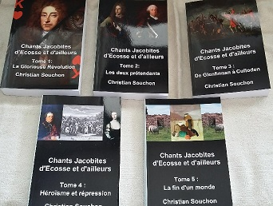 |
(CD 1 à 5) existent aussi en DISQUES CD 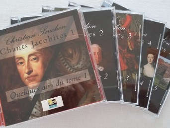 |
|
The Jacobite songs embody Scotland's eternal desire to triumph over adversity, to assert her originality and national consciousness.
This song tradition arose from the attempts of James VII/II to recover his throne in 1689 and the uprisings prompted by his son and grandson.
This repertoire combines a great variety of songs.
Only a few pieces have survived from the originally many contemporary rebel songs, such as "Gillicrankie", "The Chevalier's Muster Roll", "Sherrifmuir", Tranent Muir and "Johnnie Cope" or the songs in Gaelic language . The rest was lost, being both ephemeral and hazardous when committed to paper. Only two almost contemporary collections of Jacobite songs in English were printed without printer’s name or name of place on account of their hazardous contents : Loyal Songs (1750) and The True Loyalist (1779). Fortunately towards the later half of the 18th century and during it several old songs, including Jacobite songs, found their way into so-called "broadsides" and "chapbooks" (printed loose sheets). Many of them were preserved, along with pœms and songs collected from recitation, by a clerk, David Herd (1732 - 1810) who published them in the 1769, 1776 and 1791 editions of his "Ancient and Modern Scottish Songs". He also set up manuscript collections that were used by other authors, like Robert Burns and Sir Walter Scott (and edited in 1904 by Hans Hecht in "Songs from Herd's MS"). Herd's merits were acknowledged by the industrious and exceedingly accurate collector of ancient songs, Joseph Ritson (1752 - 1803). Other sources like Peter Buchan's "Gleanings of ...Ballads" (1828) or R.H. Cromek's and Allan Cunningham's "Remains of Nithsdale and Galloway songs" (1810) are not, by far, so trustworthy. Very few Jacobite songs have a tune of their own. Most of them were written to fit an existing tune, which made of this body of lore one of the richest of the world. In particular, its contribution to American folk music is certainly as capital as the African one. When James Hogg set to collect and publish as many Jacobite songs as possible, by 1819, he created a new GENRE, consisting in recycling authentic old songs or creating ex nihilo new ones, a trend encouraged by the ensuing romantic movement. For instance, he included a "Killiecrankie" song reconstructed by Burns from an old tune and a short chorus, following an old tradition in Scottish pœtry, devised to commemorate momentous events in the national history. Lady Nairne, born in an active Jacobite family strongly contributed to enrich this corpus of song with wistful elegies like "Wi' a hundred Pipers" and "Will ye no come back again". The genre extended outside Scotland to the areas where the Jacobite movement had found support: Northumberland, Cumberland, Ireland and produced, for instance the beautiful lament on Derwentwater's execution in 1746. But not only there: the famous "Over the Sea to Skye" was written by an Englishman, Harold Boulton, in the 1880's, as a fashionable exercise. In our times, this genre has not died out. It was revisited by modern folk revivalists, like the Corries, in the seventies and eighties, who reflected rising national feeling in Scotland and new songs are currently written by the heirs of Bruce and Wallace: Rownie Browne, Alastair McDonald, Jim McLean, Gordon Menzie, Rody McMillan Alan Reid & Rob van Sante... |
Les chants Jacobites ont leur source dans l'âme écossaise acharnée à triompher de l'adversité et à affirmer une originalité nationale dont elle est consciente. Cette tradition de chants est apparue quand Jacques II tenta de récupérer son trône en 1689 et avec les soulèvements suscités par son fils et son petit fils. Ce répertoire est très varié. Seules quelques pièces ont survécu parmi les nombreux chants de l'époque, tels que "Gillicrankie", "The Chevalier's Muster Roll", "Sherrifmuir", Tranent Muir et "Johnnie Cope" ou les chants en gaélique. Le reste fut perdu, du fait de son caractère éphémère ou dangereux une fois consigné par écrit. Deux recueils de chants Jacobites tout au plus furent publiés, à l'époque des événements, sans nom ni adresse d’imprimeur compte tenu de leur contenu subversif: Chants Loyaux (1750) et Le vrai Loyaliste (1779). Par bonheur, pendant toute la seconde moitié du 18ème siècle, beaucoup d'anciens chants, y compris Jacobites, furent publiés sous forme de feuilles volantes dites "broadsides" et "chapbooks". Certains furent sauvés de l'oubli, avec d'autres pièces recueillies oralement, par un comptable, David Herd (1732 - 1810) qui les publia en 1769, 1776 et 1791 dans ses "Chants écossais, anciens et modernes". Il constitua également une collection de manuscrits qui fut utilisée par d'autres littérateurs, comme R. Burns et Walter Scott (et publiée en 1904 par Hans Hecht dans "Chants tirés des manuscrits de Herd"). L'œuvre de Herd lui valut l'hommage du très pointilleux collecteur de chants anciens, Joseph Ritson (1752 - 1803). Les "Moissons de ballades..." de Peter Buchan (1828) ou les "Vestiges de chants du Nithsdale et de Galloway" (1810) de R.H. Cromek et Allan Cunningham sont des sources bien moins fiables. Très peu de chants Jacobites ont leur mélodie propre. La plupart d'entre eux ont été écrits pour être chantés sur un "timbre" existant, ce qui fait de ce corpus, l'un des plus riches au monde. Sa contribution au folklore des Etats Unis est sans doute aussi déterminante que l'héritage africain. Lorsque James Hogg commença à collectionner et à publier le plus de chants Jacobites possible, vers 1819, il créa un nouveau GENRE, consistant à recycler d'authentiques vieux chants ou à en créer de nouveaux ex-nihilo, une tendance qui ira croissant avec l'avènement du romantisme. C'est ainsi qu'il accueille un "Killiecrankie" fabriqué par Burns à partir d'une ancienne mélodie et d'un bref refrain. Ce faisant, il reprenait une antique tradition de la poésie écossaise qui commémorait ainsi les événements marquants de l'histoire nationale. Lady Nairne, issue d'une famille de militants Jacobites a puissamment contribué a enrichir ce répertoire par des élégies mélancoliques telles que "Avec cent sonneurs" et "Ne reviendras-tu pas". Ce genre déborda les frontières de l'Ecosse dans les régions où le mouvement Jacobite avait fait des adeptes: Northumberland, Cumberland, Irlande et produisit, entre autre, la belle complainte sur la mort de Derwentwater en 1746. Mais pas seulement là: le fameux "Par delà la mer, vers Skye" est dû à un Anglais, Harold Boulton, qui, en 1880, se livra à cet exercice à la mode. Le genre n'a pas disparu à l'époque contemporaine. Il a été revu est corrigé par les modernes revivalistes de la "musique folk", tels que les Corries dans les années 70 et 80, qui ont vu la résurgence d'un sentiment national écossais. Des chants nouveaux sont écrits même de nos jours par les héritiers de Bruce et Wallace: Rownie Browne, Alastair McDonald, Jim McLean, Gordon Menzie, Rody McMillan, Alan Reid & Rob van Sante... |
Loyal Songs (1750) and The true Loyalist or Chevalier's Favourite (1779)
Chants Loyaux (1750) et Le Vrai Loyaliste ou le Livre favori du Chevalier (1779)
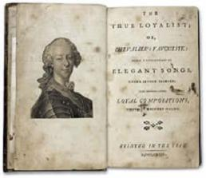

|
These two little collections of Jacobite songs were published respectively in 1750 and 1779 without printer's name or name of place, with the enigmatic mention "... elegant songs...wrote by eminent hands". Many of the best known Jacobite verses appear first in these books but not the most poetical ones. These are militant works, free of sentimentality and despondency, unlike Burns or Lady Nairne's later compositions. Several pieces are later modifications of verses in honour of James III/VIII, the latest work being doubtless a song celebrating the marriage of Prince Charlie to Louise of Stolberg, in 1772. Edward. F. Rimbault (1816 - 1876), who wrote "A Little Book of Songs and Ballads" (London, 1851) suggests in a contribution to the Journal "Notes and Queries" dated 21 Sept. 1867, that the author of "The Royal Oak Tree, Charles Salmon, a minor Edinburgh poet and a staunch Jacobite, who says his song to be found in "an obscure collection of Jacobite Songs...without the author's name" could have printed and circulated the "Chevalier's favourite" among the members of his club, the Royal Oak Club. He was one of Robert Fergusson's friends (1750 - 1774). On the other hand, the only reference to an author in the book, William Meston (1688 - 1745) who composed Our ain bonny Laddie and was a professor at Marischal College in Aberdeen, could suggest a link to that institution. If Burns, as may be inferred from his post-1788 songs and many (but not all) later authors and collectors of Jacobite songs were acquainted with the contents of "The True Loyalist", it is not sure wether the songs it contains actually circulated during the rebellions. Among those of the 55 songs (+ a "Tragicomedy" and 9 poems) included in the "Chevaliers Favourite", that often appear in the ensuing collections, these five are also found in the "Loyal songs": O, how shall I venture Though George reigns in Jamie's Stead The Clans are coming You're welcome Charlie Stuart Be valiant still! . |
Ces deux petits recueils de chants Jacobites furent publiés respectivement en 1750 et 1779, sans nom d'imprimeur ou d'éditeur et avec l'énigmatique mention "...Chants élégants...composés par des mains éminentes." La plupart des couplets Jacobites les plus fameux font leur première apparition dans ces livres, mais non les plus poétiques. C'est qu'il s'agit d'œuvres de combat, exemptes de sentimentalité ou de désespérance, à l'inverse des compositions plus tardives de Burns ou de Lady Nairne. Plusieurs sont des reprises de couplets en l'honneur de Jacques III/VIII. Le chant le plus récent est sans doute celui composé en 1772 pour le mariage de Charlie et de Louise de Stolberg. Edward F. Rimbault (1816 - 1876), qui édita "Un petit livre de chants et ballades" à Londres en 1851, suggère dans un article publié dans la revue "Notes et Questions" du 21 sept. 1867, que l'auteur du "Chêne royal, Charles Salmon, un écrivain mineur d'Edimbourg et un Jacobite forcené qui affirme que son chant figure "dans une obscure collection de chants Jacobites...sans nom d'auteur", pourrait être celui qui fit imprimer et diffusa ce "Livre favori du Chevalier", parmi les membres de son club, celui du "Chêne Royal. Il était l'ami de Robert Fergusson (1750 - 1774). Par ailleurs le fait que le seul nom cité dans cet ouvrage soit celui de William Meston (1688 - 1745) qui composa Our ain bonny Laddie et enseigna au Marischal College d'Aberdeen pourrait inciter à faire le lien entre ce livre et cet établissement. Si Burns, comme on peut le supposer au regard de ses chants postérieurs à 1788 et beaucoup d'autres auteurs et collecteurs de chansons Jacobites (mais pas tous), avaient lu le "Vrai Loyaliste", on ne saurait dire si son contenu avait circulé pendant les rébellions. Parmi ceux des 55 chants (+ 1 "tragicomédie et 9 poèmes) figurant dans le "Livre favori du Chevalier" que l'on a publiés souvent par la suite, les cinq qui suivent se trouvent aussi dans le recueil "Chants Loyaux": Oh, tenterai-je? Bien que Georges règne à la place de Jacques Les clans s'avancent Bienvenue à Charles Stuart Du courage quand même! . |
David Herd (1732 - 1810)
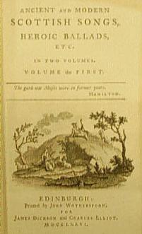
|
If the honour of having revived Scottish popular poetry remains unreservedly with Robert Burns and Walter Scott, these authors found in David Herd an informant and a collaborator who deserves ample praise. The "Ancient and Modern Scottish Songs, Heroic Ballads etc." published in 1776 are generally acknowledged to be the collection of David Herd, born in 1732 at St.Cyrus in Kincardineshire. He was a clerk in the office of an Edinburgh accountant. Sir Walter Scott says that "he was...generally esteemed for his...antiquarian science mixed with much good-nature and great modesty." His collection to which Joseph Ritson acknowledges "indebtness for a number of excellent and genuine compositions, never before printed", is called by Scott "the first classical collection of Scottish Songs and Ballads". The Scottish publisher Robert Chambers (1802 - 1871) enumerates 54 songs "of great merit", noted down from recitation by Herd which might otherwise have been lost. Among them are several Jacobite songs: Gilliecrankie (Clavers and his Highlandmen) Sheriffmuir (There's some say that we wan) Tranentmuir (The Chevalier being void of fear) General Lesley March Highland March (In the Garb of the Gaul) Little wat ye what's coming (Chevalier's Muster-Roll) Lochaber no more and pre-Jacobite versions of Jacobite songs: Brooom of Cowdenknows Bessy's Haggies Hap me with thy pettycoat Highland Laddie Katharine Oggie Lass of Livingstane The Mill, Mill O (Charlie's Landing) Tweed side (Both Sides the Tweed) The Wauking of the Fauld (Song of the Gaelic Clans). In addition, Herd's collections of manuscripts, first edited in 1904 by the German scholar Hans Hecht but very likely, at least partly, submitted to Burns in the autumn of 1787, contain prototypes or elements of other Jacobite songs: Mass David Williamson (Cakes of Croudy, verse 2) Daintie Davie (idem) Logie of Buchan Johnnie Lad (Cock up your Beaver) Turnimspike King James's Lamentation My Laddie Awa, Whigs, awa! Kist the Streen |
Si l'honneur d'avoir remis au goût du jour la poésie populaire écossaise revient sans conteste à Robert Burns et à Walter Scott, ces auteurs ont trouvé en David Herd un informateur et un collaborateur digne des plus vifs éloges. Les "Chants écossais anciens et modernes, ballades héroïques, etc." publiés en 1776 sont, de l'avis général, l'œuvre du collecteur David Herd, né en 1732 à St Cyr en Kincardine. Il était employé de comptabilité à Edimbourg. Sir Walter Scott disait de lui qu"'il était ...estimé de tous, tant pour sa science des textes anciens, que pour son affabilité et sa grande modestie." Son recueil à qui, selon Joseph Ritson, nous sommes "redevables d'un certain nombre d'excellentes et authentiques compositions jamais encore publiées" est considéré par Scott comme "le premier florilège classique de chansons et ballades écossaises". L'éditeur écossais Robert Chambers (1802 - 1871) n'énumère pas moins de 54 chants "remarquables" notés au vol par Herd, qui, sans lui, auraient pu disparaître pour toujours. Parmi eux on trouve plusieurs chants Jacobites: Gilliecrankie (Clavers descend avec ses gens) Sheriffmuir (Certains disent "c'est nous!") Tranentmuir (Le Chevalier sans hésiter) La marche de Lesley Marche des Highlands (Sous l'habit des Gaulois) Devine qui vient là (Le registre d'appel du Chevalier) Adieu à Lochaber et les versions pré-Jacobites de plusieurs chants Jacobites: Les genêts de Cowdenknows Les haggis d'Elisabeth Couvre-moi de ton jupon Highland Laddie Katharine Oggie La dame de Livingstone Le moulin (L'arrivée de Charlie) Au bord de la Tweed (Les rives de la Tweed) La garde aux brebis (Chant des Clans des Highlands). En outre, les collections de manuscrits de Herd, publiées pour la première fois en 1904 par le bibliographe allemand Hans Hecht, mais vraisemblablement communiquées, au moins en partie, à Burns à l'automne 1787, contiennent les prototypes ou des éléments d'autres chants Jacobites: Le Pasteur David Williamson (Galettes de gruau, couplet 2) Gentil David (idem) Logie de Buchan Jeannot (Redresse to bonnet) La route à péage Complainte du roi Jacques Le jeune homme Dehors, les Whigs! Les baisers d'hier |
Joseph Ritson (1752-1803)
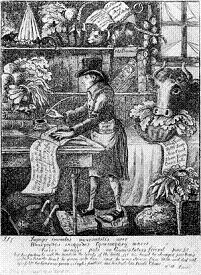
|
David Herd's painstaking collecting work was prolonged by a London conveyancer, born at Stockton-on-Tees, J. Ritson who devoted his leisure moments to literature and became famous in 1782, when he published an attack on the historain Thomas Warton whom he charged with cheating and lying to cover his ignorance. His criticisms, albeit expressed in a bitter language, were to the point and his corrections have since been adopted. Bishop Thomas Percy, the author of "Reliques of Ancient English Pœtry", published in 1765, was one of the next victims of this vindictive critic. Percy did not treat the works with scrupulous care. He wrote his own notes on the folio pages, emended the rhymes and even removed whole passages. In his own Scotish songs in 2 volumes (dated 1794), Ritson spared no pains to ensure accuracy in the texts of old songs and ballads he edited. Walter Scott who admired his accuracy was, in spite of his temper, one of the rare men who could get on with him. Spelling was one of his eccentricities: he made a point of spelling his own name "Ritson" instead of "Richardson". In his opinion (preface to "Scotish Songs"), "the word 'Scottish' is an improper ortography of 'Scotish'; 'Scotch' is still more corrupt; and 'Scots' (as an adjective) a national barbarism". As early as 1796, Ritson showed signs of mental collapse. When he died in 1803, he was completely insane, The songs in his collection are divided into 4 classes: love songs, songs of humor, historical and martial songs, legendary songs (usually denominated "ballads"). The third class include several major Jacobite songs, noted, like the rest with the utmost accuracy, mostly with the tune (unlike David Herd's collection). Concerning the music, the author lists his sources, most likely apt to contain the genuine and original airs, "so far, at least, as musical notation can be relied on": - William Thomson's "Orpheus Caledonius", 2nd edition (1733), - James Oswald's "Caledonian Pocket Companion" (1743 - 1759), - William McGibbon's "Scots Tunes" (1742, 46, 55), - William Napier's "Original Scots songs" (c. 1790), - Domenico Corri's "Most favourite Scots songs" (1783) - and Johnson's "Scots Musical Museum" (vol. 1 to 4: 1788 - 1792). He adds: "Where a song is...presumed to have a tune,which has been found impossible to procure, blank lines are left for its after-insertion with the pen." Some tunes, deemed "corrupted", were amended by the composer William Shield (1748 - 1829) with a view to "restoring or preserving their genuine simplicity". Ritson consider a bass part as improper in his volumes, since "the Scotish tunes are pure melody which are not unfrequently injured by the basses which have been set to them by strangers, the only kind of harmony known to the original composers consisting perhaps of the unisonant drone of the bag pipe" (a hint at the questionable accompaniments of Scots tunes by Beethoven, Haydn or Pleyel for George Thomson's collection - see article "Burns" below). Songs taken from David Herd's "Ancient and Modern Scots Songs", 1769 or 1776: 11 Cillikrankie (with tune) 15 Little wat ye wha's coming (blank sheet) 16 Sheriff-Muir (There's some...) (with tune) 19 Tranentmuir, by Skirvin (same tune as 11) 33 The Flowers of the Forest (same tune as "Flowden Hill", vol.II, page 1) from Allan Ramsay's "Tea Table Miscellany (1724 - 1727): 9 General Lesly's March (with tune) from a manuscript copy, collated with a common stall print: 10 The Haus of Cromdale (with tune) from Johnson's "Scots Musical Museum" (volumes 1,2 & 3, 1788 - 1790): 12 Carl an the King come (with tune) 18 Up and war them a', Willie (with tune) 22 The White Cockade (with tune) 26 Awa Whigs, awa! (with tune) 31 Strathallan's Lament (with tune) 32 My Harry was a Gallant gay (with tune "Highlander's Lament") from a MS in the Harleian Library (N°7332): 13 On the Act of Succession (blank sheet) from common collections: 14 The Thistle and Rose (blank sheet) 30 Charming Highland Man (Lewie Gordon) (with tune, "Tarry wœ" being given as alternate tune) from a modern stall copy: 17 Dialogue between Will Lickladdle... (with tune + "chorus to be sung to the tune of the "Camerons' March") from "A Collection of Loyal Songs etc. c. 1750: 21 The Clans (Here's a Health...) (with tune "The Campbells") 27 Welcome Charley Stuart (with tune) 28 Tho' Geordie reigns in Jamie's stead (with tune "For all that") 29 Oh, how shall I venture... (same tune as "Alloway House", Vol. I, page 79) 34 To daunton me (with tune) from a MS copy dictated by a young gentleman who had it from his grandfather: 23 Mayor of Carlisle (same tune as "Katherine Ogie", vol. II, page 90) from "The True Loyalist or Chevalier's Favourite", 1779: 24 All the Clans are away ( or "Let mornful Britons", same tune as 21) From the author's (Struan) "Pœms", 1749: 25 A hoary Swain (with tune) Additional songs from the 4th volume of Johnson's "Scots Musical Museum" (1792): 14* Such a Parcel of Rogues (with tune) 15* Kenmure is on and away (with tune) 19* There'll never be Peace (with tune) 34* Ye Jacobites by Name (with tune) 34** Orananaoig (with tune) The origin of this song is not mentioned: 20 Cope are ye waking yet? (with tune "Fy to the hills in the morning") It is not the "Musical Museum", since, in a note to this song and its variation, Ritson states that "in Johnson's SMM edition 1787 is a copy differing very much from both..." |
Le très zélé David Herd eut un successeur en la personne de J. Ritson, un notaire de Londres, né à Stockton sur la Tees, qui consacrait ses loisirs à la littérature. Il devint célèbre en 1782 en publiant une philippique contre l'historien William Warton qu'il accusait de malhonnêteté et de mensonge destinés à masquer son ignorance. Bien qu'outrancières dans leur expression, ses critiques n'en étaient pas moins fondées et ses corrections font désormais autorité. L'évêque Thomas Percy, l'auteur en 1765 des "Reliques de l'ancienne poésie anglaise", fut aussi l'une des victimes de ce critique vindicatif. Percy se montrait désinvolte envers les textes, en insérant ses propres notes sur les folios, en corrigeant les rimes et en supprimant des passages entiers. Dans son propre recueil de Chants écossais en 2 volumes (datés de 1794), Ritson ne ménagea pas sa peine pour restituer les textes exacts des anciennes chansons et ballades qu'il publiait. Walter Scott qui appréciait beaucoup sa minutie fut l'un des rares à pouvoir s'entendre avec lui. Une de ses excentricités était son orthographe: il tenait, par exemple à épeler son nom "Ritson" au lieu de "Richardson". Selon lui (préface à "Chants écossais"), "le mot 'Scottish' doit s'orthographier 'Scotish'. Le mot 'Scotch' est encore plus impropre. Quant à (l'adjectif) 'Scots', c'est un barbarisme qui fait injure à la nation". Dès 1796, la santé mentale de Ritson donna des signes de défaillance. Il mourut en 1803 dans un asile d'aliénés. Les chants de son recueil sont répartis en 4 classes: chants d'amour, chants comiques, chants historiques et guerriers, chants légendaires (encore appelés 'ballades'). La troisième classe renferme plusieurs chants Jacobites fameux, qu'il nota aussi avec un soin méticuleux, (le plus souvent avec le timbre, contrairement à David Herd). Concernant la musique, Ritson utilise comme sources les recueils les mieux à même de renfermer des airs authentiques, "si du moins la notation musicale le permet": - l'"Orpheus Caledonius", 2ème édition (1733) de William Thomson, - le "Caledonian Pocket Companion" (1743 - 1759) de James Oswald, - les "Scots Tunes" (1742, 46, 55) de William McGibbon, - les "Original Scots songs" (c. 1790) de William Napier, - les "Most favourite Scots songs" (1783) de Domenico Corri - et le "Scots Musical Museum" (vol. 1 à 4: 1788 - 1792) de Johnson. Il ajoute: "Quand un chant est censé avoir un timbre qui s'est avéré introuvable, on a laissé des portées en blanc pour permettre de rajouter les notes à la plume." Certaines mélodies jugées "déformées" ont été corrigées par le compositeur William Shield (1748 - 1829), en vue de "restaurer ou conserver leur simplicité d'origine". Ritson considère que l'ajout d'une partie d'accompagnement n'a pas sa place dans ses ouvrages, car "les airs écossais sont de la mélodie pure, trop souvent défigurée par les accompagnements dont les ont affublés les étrangers, la seule harmonisation connue de leurs auteurs d'origine, étant le bourdon à une note de la cornemuse" (allusion aux discutables accompagnements de Beethoven, Haydn ou Pleyel pour le recueil de Thomson - cf. article "Burns"). Chants tirés des "Ancient and Modern Scots Songs" de David Herd, 1769 ou 1776: 11 Cillikrankie (avec timbre) 15 Devine un peu qui vient! (portées vides) 16 Sheriff-Muir (Certains disent...) (avec timbre) 19 Tranentmuir, de Skirvin (même timbre que 11) 33 Les Fleurs de la forêt (même timbre que "Flowden Hill", vol.II, page 1) De la "Tea Table Miscellany d'Allan Ramsay (1724 - 1727): 9 La marche de Lesly (avec timbre) De la copie d'un manuscrit, collationné avec un imprimé du commerce: 10 Les prairies de Cromdale (avec timbre) Du "Scots Musical Museum" de Johnson (volumes 1,2 & 3, 1788 - 1790): 12 Ah que le roi vienne! (avec timbre) 18 Cours les avertir! (avec timbre) 22 La cocarde blanche (avec timbre) 26 Dehors les Whigs! (avec timbre) 31 Complainte de Strathallan (avec timbre) 32 Highland Harry (avec timbre "Highlander's Lament") D'un manuscrit de la Bibliothèque de Harley (N°7332): 13 L'acte de succession (portées vides) De recueils usuels: 14 Le chardon et la rose (portées vides) 30 Charmant Highlander (Lewie Gordon) (avec timbre, "Tarry woe!" figurant comme variante) D'un ouvrage moderne: 17 Dialogue entre Will Lèchelouche... (avec timbre + "refrain identique à celui de la "Marche des Caméroniens") De "A Collection of Loyal Songs etc. c. 1750: 21 Les Clans (A la santé...) (avec timbre "The Campbells") 27 Bienvenue, Charles Stuart (avec timbre) 28 Bien que Georges règne à la place de Jacques (avec timbre "For all that") 29 Oh, tenterai-je... (même timbre que "Alloway House", Vol. I, page 79) 34 Ce qui m'ôte tout courage (même timbre) De la copie d'un manuscrit sous la dictée d'un jeune homme qui le tenait de son grand-père: 23 Le maire de Carlisle (même timbre que "Katherine Ogie", vol. II, page 90) Du "True Loyalist ou Chevalier's Favourite", 1779: 24 L'ère des clans est-elle donc finie? (ou "Il faut que les Britons", même timbre que 21") Des "Poèmes" de l'auteur (Struan), 1749: 25 Gamin blanchi sous le harnais (avec timbre) Chants additionnels tirés du 4ème volume du "Scots Musical Museum" de Johnson (1792): 14* La nation est aux mains de chenapans (avec timbre) 15* Kenmure va nous quitter (avec timbre) 19* Qu'on pose les armes! (avec timbre) 34* Vous qu'on nomme Jacobites (avec timbre) 34** Orananaoig (avec timbre) L'origine du chant suivant n'est pas donnée: 20 Cope, veillez-vous toujours? (avec timbre "Fy to the hills in the morning") Ce n'est pas le "Musical Museum", car selon la note qui accompagne ce chant et sa variante, "le Musée de Johnson, édition 1787, donne une leçon bien différente de ces deux versions..." |
Robert Burns 1759-1796
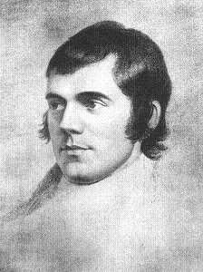
|
Robert Burns was born near Ayr, Scotland, 25th of January, 1759. His father, though always extremely poor, sent him to school for three years in a neighbouring village, But it was to his father and to his own reading that he owed the more important part of his education and to have acquired a good knowledge of English, a reading knowledge of French, and a fairly wide acquaintance with the masterpieces of English literature. In 1766 his father rented the farm of Mount Oliphant, and in helping him with the farming work young Robert seems to have exceedingly exerted himself. In 1771 the family move to Lochlea, and Burns started to learn flax-dressing. His father died in 1784, and with his brother Gilbert the pœt rented the farm of Mossgiel; but this venture proved a failure. He had meantime married Jean Armour, but his father-in-law tried to overthrow his marriage. Therefore he resolved to emigrate and in order to raise money for the passage he published in 1786 a volume of pœms which he had been composing for some years. This volume was unexpectedly successful, so that, instead of emigrating, he went up to Edinburgh, where he became the literary celebrity of the season. An enlarged edition of his pœms was published there in 1787, enabling him to aid his brother in Mossgiel, to take for himself the farm of Ellisland in Dumfriesshire and to now regularly marry Jean, whom he brought to Ellisland. Continued ill-success in farming led him, in 1791, to abandon Ellisland, and he moved to Dumfries, where he had obtained a position in the Excise. But he was now thoroughly discouraged; his work was mere drudgery and he died at Dumfries in his thirty-eighth year. Burns' poetry falls into two main groups: English and Scottish. It is in Scottish pœtry that he achieved triumphs of a quite extraordinary kind. Since the union of the crowns, the Scots dialect had largely fallen into disuse as a literary medium. Shortly before Burns' time, Allan Ramsay and Robert Fergusson had initiated a revival of the vernacular which Burns succeeded in carrying to its highest pitch, becoming thereby, the pœt of his people par excellence. He first showed complete mastery of verse in the field of satire. In some pœms, he manifested sympathy with the protest of the so-called "New Light" party, opposed to the extreme Calvinism and intolerance of the dominant " Auld Lichts", such contributing to the theological liberation of Scotland. His first volumes also contained a number of pœms vividly descriptive of the Scots peasant life with which he was familiar. But the real national importance of Burns is due chiefly to his SONGS. As a result of the Puritan austerity following the Reformation, Scottish song had become hopelessly degraded in respect of their literary quality. From youth Burns had been interested in collecting the songs he had heard sung or found printed, and the rescuing of this national inheritance had become his vocation. About his song-making/rescuing, two points are especially noteworthy: first, that the greater number of his lyrics sprang from actual emotional experiences; second, that almost all were composed to old melodies. From the autumn of 1787 almost until his death in 1796, he supplied material for Johnson's "Scots Musical Museum," and as few of the songs collected could appear in this respectable collection, he found it necessary to make them over, keeping a stanza or two, or only a line or chorus, or merely the name of the air. All the rest was his own creation. He succeeded brilliantly in combining his work with folk material, respectful of the tradition of popular song. The "Scots Musical Museum" was published in 5 volumes from 1787 till 1803, reprinted in 6 volumes in 1833, and in 1853 in 4 volumes with notes by William Stenhouse, William Laing and Sharpe. Though he gave it away in 1791, so that there is less information on songs written or printed later, the notes written by Burns in R. Riddell's interleaved copy of the Museum, published in 1906 confirmed by a MS in Burn's handwriting discovered in 1922 make easier distinguishing Burns's own creation from mere collected songs. The Hastie MSs kept in the British Museum (162 songs in Burns's handwriting) as well as Gray's and Law's MS lists (lists of songs intended for the 2nd and 3rd volume of the museum) also are of great help. The Edinburgh music teacher Stephen Clarke (who died in 1797) was brought in to harmonize the tunes in the Museum. Burns reproached him with "indolence". But if his harmonisations may seem rudimentary (after the model of the "Orpheus Caledonius", 1733), they don't overpower but support and raise the vocal line, and are therefore more acceptable than the florid accompaniments G.Thomson obtained from Beethoven, Haydn and Pleyel for his "Collection". For George Thomson's collection of Scottish airs Burns started in September 1792 to perform a function similar to that which he had had in the "Museum"; and he chiefly devoted the last nine years of his life to these two publications, refusing any recompense for this work which he regarded as a patriotic service. Most of his productions have passed into the life and feeling of the Scottish nation and, especially, his Jacobite songs. Awa', Whigs, awa'! Ballad for Westerhall (non Jacobite) Bannocks o bear meal Birthday Ode 1787 (poem) Bonie Dundee Bonnie briar bush Bonnie Moorhen Bonniest lad that e'er I saw Cairney Mount Carle an' the King come Charlie is my darling Chevalier's lament Cock up your beaver To daunton me (non Jacobite) Dumfries Volunteers For the Sake of Somebody Frae the friends and land I love From Great Dundee (pœm) Here's a health to them that's awa Here Stuarts once (pœm) Highlands'widow It was all Johnnie Cope Kenmure's up an' awa' Killiecrankie Lovely lass of Inverness Mary Queen of Scots My Harry was a gallant gay My heart is wae and unco wae Nithsdale's welcome O'er the water tae Charlie Oran an Aoig Scots wha have Sherramuir Strathallan's lament Such a parcel of Rogues There'll never be peace Tutti Tatti (non Jacobite) What Merriment has ta'en the Whigs When wild War (non Jacobite) White Cockade Ye banks and braes (non Jacobite) Ye Jacobites The young Highland rover 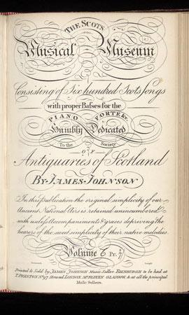 |
Robert Burns est né près d'Ayr, en Ecosse, le 25 janvier 1759. Son père, quoique extrêmement pauvre, l'envoya à l'école pendant trois ans dans un village voisin. C'est à ce père et à ses propres lectures qu'il doit l'essentiel de son éducation et d'avoir acquis une solide connaissance de l'anglais, de savoir lire le français et de s'être familiarisé avec les chefs-d'œuvre de la littérature anglaise. En 1766 son père acheta la ferme de Mount Oliphant et le jeune Robert semble avoir présumé de ses forces en l'aidant dans les travaux des champs. En 1771 toute la famille alla s'installer à Lochlea où Burns apprit le travail du lin. Son père mourut en 1784 et Robert loua, avec son frère Gilbert, la ferme de Mossgiel, dont l'exploitation fut un échec. Entre temps il avait épousé Jeanne Armour, mais son beau-père s'efforça de faire déclarer nulle cette union. Aussi décida-t-il d'émigrer et, pour réunir les fonds nécessaires au voyage, il publia en 1786 un volume des poèmes qu'il composait depuis quelques années. Ce volume connut un succès inattendu, si bien qu'au lieu d'émigrer, il s'installa à Edimbourg où il devint la coqueluche littéraire du moment. Une édition enrichie de ses poèmes y fut publiée en 1787, ce qui lui permit d'aider son frère, demeuré à Mossgiel, tout en prenant pour lui-même la ferme d'Ellisland dans le Dumfriesshire et de régulariser son union avec Jeanne qui vint le rejoindre à Ellisland. Une succession de déboires dans cette activité le contraignit en 1791 à abandonner Ellisland et à s'installer à Dumfries où il avait obtenu un poste d'agent de l'accise. Mais il fut démoralisé par ce travail très fastidieux et il mourut à Dumfries dans sa trente-huitième année. L'œuvre poétique de Burns se divise en deux groupes: anglais et écossais. C'est ses poésies écossaises qui firent surtout sa gloire. Depuis l'union des couronnes, le dialecte écossais était largement tombé en désuétude en tant que langue littéraire. Peu de temps avant l'émergence de Burns, Allan Ramsay et Robert Fergusson en avaient relancé l'usage, mais Burns parvint à le hisser à des sommets depuis lors inégalés, devenant ainsi, le poète de l'Ecosse par excellence. Il se fit d'abord remarquer comme poète satirique. Certains de ses poèmes se font l'écho de sa sympathie pour le mouvement de protestation appelé le parti de la "Lumière Nouvelle", opposé à l'extrémisme calviniste et à l'intolérance de l'aile majoritaire " Auld Lichts" (Lumières Anciennes), contribuant ainsi à la libération confessionnelle de l'Ecosse. Ses premiers volumes renfermaient également un certain nombre de poèmes donnant une description vivante du monde rural écossais qui lui était familier. Mais ce qui confère vraiment à Burns une importance nationale ce sont principalement ses CHANSONS. L'austérité puritaine instaurée par la Réforme avait fait de la chanson écossaise un genre désespérément dégradé au regard de la qualité littéraire. Dès son plus jeune âge, Burns s'était passionné pour la collecte des chansons qu'il avait entendues ou qu'il trouvait tout imprimées et le sauvetage de cet héritage culturel national devait devenir chez lui un sacerdoce. Concernant son travail de compositeur/restaurateur, deux points sont à souligner: - la plupart de ses textes reflétaient des émotions réellement éprouvées; - d'autre part, presque tous ces textes furent composés sur des mélodies anciennes. Il ne cessa, depuis l'automne 1787 presque jusqu'à sa mort, d'alimenter le Musée Musical Ecossais de Johnson, mais du fait que très peu parmi les chansons recueillies étaient propres à figurer dans cette respectable collection, il crut bon de les "reformuler", conservant une strophe par ci, deux lignes par là, ou le refrain, ou parfois même uniquement le nom du morceau. Tout le reste était de lui. Il excella à combiner sa propre créativité et le matériau folklorique, tout en en respectant le caractère traditionnel. Le "Musée" parut en 5 volumes entre 1787 et 1803 et fut réimprimé en 6 volumes en 1833, puis en 4 volumes en 1853 avec des notes de William Stenhouse, William Laing et Sharpe. Bien qu'il s'en soit séparé en 1791, de sorte qu'on y trouve moins d'informations sur les chants écrits ou publiés plus tard, les notes écrites par Burns dans l'exemplaire interfolié de R. Riddell du Musée, publiées en 1906 et confirmées par un autographe de Burns découvert en 1922, permettent de mieux s'y retrouver entre ce qu'il a collecté et ce qu'il a créé. Il en va de même des manuscrits Hastie conservés au British Museum et des listes de manuscrits Gray et Law (listes de chants destinés aux 2ème et 3ème volumes). Le professeur de musique édimbourgeois Stephen Clarke (qui mourut en 1797) fut recruté pour harmoniser les mélodies du "Musée". Burns lui reproche d'aller "au plus facile". Mais, si ses harmonisations semblent simplistes (conformes au standard de l'"Orpheus Caledonius" de 1733), elles n'écrasent pas le chant, mais le soutiennent et le mettent en valeur. Elles valent mieux que les fioritures que G. Thomson arracha à Beethoven, Haydn et Pleyel pour sa "Collection". Pour la collection George Thomson's collection of Scottish airs, Burns remplit à partir de 1792, une fonction similaire à celle qu'il avait assumée pour le "Museum" et il consacra l'essentiel des neuf dernières années de sa vie à ces deux publications, refusant tout salaire pour ce travail qu'il regardait comme un service rendu à sa patrie écossaise. La plupart de ses productions sont devenues des éléments essentiels de la psyché écossaise et, en particulier, ses Chants Jacobites. Au diable, les Whigs! Ballade de Westerhall (non Jacobite) Les galettes d'orge Ode pour l'anniversaire de 1787 (poème) Bonie Dundee Le joli buisson de bruyère Le plus beau gars que j'aie jamais vu La Poule d'Eau Cairney Mount Mon ami, si le Roi vient A Charlie mes suffrages Les lamentations du Chevalier Redresse ton bonnet On ne me vaincra jamais (non Jacobite) Les volontaires de Dumfries Celui qu'on ne doit nommer Les amis et le pays que j'aime Du Grand Dundee (poème) A la santé des absents! Ici les Stuarts jadis (poème) La veuve des Highlands Pour notre roi légitime Johnnie Cope Kenmure est sur le départ Killiecrankie La jolie fille d'Inverness Marie Stuart Mon Harry était courageux J'ai le cœur plein de rancœur Bienvenue à Nithsdale Au-delà des eaux vers Charlie Oran an Aoig Ecossais, vous que l'Histoire Sherrifmuir Lamentations de Strathallan Une bande de chenapans Roi Jacques, reviens! Tutti Tatti (non Jacobite) Qu'est-ce qui rend si gais les Whigs Le retour du soldat (non Jacobite) La cocarde blanche Ye banks and braes (non Jacobite) Vous qu'on nomme Jacobites Le jeune errant des Highlands |
The "Merry Muses of Caledonia" (1799)
Les "Joyeuses muses de Calédonie" (1779)
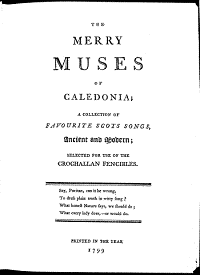
|
"The Merry Muses of Caledonia, a Collection of Favourite Scots Songs Ancient and Modern: Selected for Use of the Crochallan" is a manuscript of eighty-five unsigned bawdy songs found after his death among Robert Burns's papers, twelve of
which are in his handwriting. The collection was printed within 3 or 4 years after his death in 1796, under the auspices of the "Crochallan Fencibles", an Edinburgh singing and drinking society with subversive sympathies into which Burns was introduced in 1788, by the printer of his poems, William Smellie who founded the club. The meetings were held at a tavern in Anchor Close. The proprietor Daniel Douglas was known for his singing of the Gaelic Song 'Crodh Challein' (Collin's Cattle), hence "Crochallan". The word 'Fencible' applied to the voluntary arming due to the alarms caused by the American War of Independence, and the office-bearers of the society had pseudo-military rank. For performance at these meetings Burns wrote, beside the Bacchanalian Hey, Tutti Tatti, many subversive songs. That time was a period of bright conviviality in Scotland, when literary abilities were not lost in the solitude of the study, but opposed or joined in fraternal rivalry in such clubs of every shade and description: the Spendthrift Club, the Easy Club, the Dirty Club, etc. The afore-mentioned David Herd was, thus, an active "Knight Companion of the Cape", known as "Sir Scrape". William Smellie had died in 1795, but Burns's licentious work was surreptitiously published, perhaps by one of his friends, the bookseller Peter Hill, who also was active in the Fencibles. Burns made no secret of his interest in erotic verse but never printed these bawdy songs and left unsigned or Z-coded in the "Scots Musical Museum" the "sanitized" versions of them as he did for the Jacobite songs he was writing during those same years. Two copies of the original are known to exist, but it has since been published in fac simile edition. The "Merry Muses" were denied for more than a hundred years after Burns's death and when they were finally acknowledged, they were banned in USA until 1964 and in Britain until 1965. Lady Nairne's poem "The Land of the Leal" (written around 1798) was for a long time ascribed to Burns to atone for the licentious verses penned by the national idol. A 1811 edition of Burns poems included a modified version, retitled "Burns's Deathbed Song", with the name "John" changed to "Jean" (for Jean Armour, Burns's wife). Some of Burns's most admired works are "sanitized" versions of the original bawdry, in particular the following Jacobite songs: Dainty Davie (Cakes of Crowdie) There was a Cooper There came a Fiddler out o' Fife Here's a Health in Water Duncan Davison (Geordie Whelp's Testament) Push about the Jorum (That Mushroom Thing called Cumberland) Beware of the Ripples (My Bonnie Moorhen) The Lass of Livingstane (By Lady Nairne). |
Les "Joyeuses Muses de Calédonie, recueil de chants connus anciens et modernes sélectionnés à l'usage des Crochalliens" sont un manuscrit comprenant 85 chansons paillardes anonymes découvertes après sa mort parmi les papiers de Robert Burns. Douze d'entre elles sont écrites de sa main. Le recueil fut imprimé 3 ou 4 ans après sa mort survenue en 1796, sous les auspices des "Fencibles (volontaires) de Crochallan", un club de mélomanes bachiques à tendance subversive d'Edimbourg où Burns fut introduit en 1788 par son imprimeur William Smellie qui en était le fondateur. Les séances avaient pour cadre une taverne de d'Anchor Close dont le patron, Daniel Douglas, était réputé pour son interprétation du chant gaélique "Cro Chall" (le bétail de Collin). Quant au mot "Fencibles" il désignait les volontaires armés pour parer aux alertes dues à la Guerre d'indépendance Américaine, les dignitaires du club étant dotés de grades pseudo-militaires. C'est pour animer ces réunions, que Burns composa, outre la chanson à boire Hey, Tutti Tatti, plusieurs de ses chants subversifs. Cette époque est marquée par la brillante convivialité dont faisaient preuve les hommes de lettres écossais qui, loin de s'isoler, s'affrontaient ou s'unissaient dans des joutes fraternelles dans le cadre de tels clubs: le Club des Gagnepetits, des Sans-soucis, des Souillons, etc. C'est ainsi que David Herd fut un actif "Chevalier de la Cape", officiant comme "Sire Grattoir". William Smellie décéda en 1795, mais l'ouvrage licencieux de Burns fut publié en cachette, peut-être par l'un de ses amis, le libraire Peter Hill, lui aussi membre actif des "Fencibles". Burns ne cachait pas son intérêt pour cette littérature, mais ne la fit jamais imprimer et laissait sans signature ou marquées seulement d'un Z, ses versions "expurgées" de ces chants dans le "Musée Musical Ecossais", comme il le faisait pour les chants Jacobites de son cru publiés à cette époque. On connait 2 exemplaires de l'original dont des facsimilés furent publiés depuis. Pendant près d'un siècle après sa mort on lui dénia la paternité de ces "Joyeuses Muses et quand on la lui reconnut, ce fut pour les mettre à l'index, aux USA jusqu'en 1964, en Grande-Bretagne jusqu'en 1965. Le poème de Lady Nairne "Le pays des cœurs purs" (composé vers 1798) fut longtemps attribué à Burns pour "racheter" les vers licencieux issus de la plume de l'idole nationale. Dans une édition de ses poèmes publiée en 1811, il était rebaptisé "Chant de Burns sur son lit de mort" et le prénom "John" faisait place à celui de son épouse "Jeanne" (pour Jeanne Armour). Certaines des œuvres de Burns les plus dignes d'admirations sont des versions "expurgées" de ce qui était à l'origine des chansons paillardes, en particulier certains chants Jacobites: Le gentil David (Gâteaux de gruau) Il était un tonnelier Un violoneux s'en vint de Fife De l'eau pour boire à ta santé Duncan Davison ( Testament de Georges le Chiot) Que passe la Coupe (L'être informe nommé Cumberland) Gare aux vagues (La Poule d'eau) la fille de Livingstone (par Lady Nairne). |
Carolina Oliphant, Lady Nairne (1766-1845)
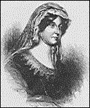
|
Carolina(e) Oliphant's songs are second only in popularity to Burns's. She was born on 16 August 1766 in Gask, Perthshire. Both her father Laurence Oliphant and her grandfather, a Robertson of Struan, had joined Bonnie Prince Charlie in the 1745 Jacobite Uprising and had to leave Scotland after Culloden. She herself had been named after the Young Pretender (Carolina being the feminine form of Charles). To cheer his sick father and her uncle, Duncan, Chief Struan Robertson, she composed Jacobite songs to old tunes. She also adapted popular melodies with new lyrics. For a long time her songs were published under the nom de plume of Mrs Bogan of Bogan. Much of her work was contributed to Robert Purdie's Scottish Minstrel, 1821-1824. She married her cousin, Major William Nairne in 1806, but kept her writing secret even from him. They had a son, born in 1808, when she was aged 43. In 1824 peerages and titles which had been forfeited as a result of the Jacobite Uprising were restored and so Caroline became Lady Nairne. Lord Nairne died in 1830 and she then travelled through Europe, returning to Gask two years before her death on 26th October 1845. Her collected songs (87 in all) were published as "Lays from Strathearn" in 1846. Like Robert Burns and James Hogg, Lady Nairne collected old folk tunes and modified or put her own words to them. Beside non-Jacobite songs as "The Rowan Tree", "The Pentland Hills", "Caller Herring", she wrote the lyrics of:
Attainted Scottish Noblemen |
Les chants de Carolina (e) Oliphant ne le cèdent en popularité qu'à ceux de Burns. Elle naquit le 16 Août 1766 à Gask, Perthshire. Son père Laurence Oliphant et son grand-père, un Robertson of Struan, avaient rejoint Bonnie Prince Charlie lors du soulèvement Jacobite de 1745 et elle-même tenait son prénom du Jeune prétendant (Carolina étant la forme féminine de Charles). Pour rendre courage à son père malade et à son oncle, Duncan, Chef du Clan (Struan) Robertson, elle composa des chants Jacobites sur de vieux airs. Elle composa aussi des textes nouveaux pour des mélodies populaires. Longtemps, ses chants furent publiés sous le pseudonyme de Mrs Bogan of Bogan. Une grande partie de son œuvre fut publié dans le cadre des 6 volumes du recueil "Scottish Minstrel" chez Robert Purdie, entre 1821 et 1824. Elle épousa son cousin, le Major William Nairne en 1806, mais ne l'informa pas de ses activités d'écrivain. Ils eurent un fils, né en 1808, alors qu'elle avait 43 ans. En 1824 les pairages et les titres qui avaient été confisqués dans le cadre de la répression anti-Jacobite furent restaurés et Caroline devint Lady Nairne. Lord Nairne mourut en 1830. Alors elle se mit à parcourir l'Europe, pour ne revenir à Gask que 2 ans avant sa mort le 26 octobre 1845. L'ensemble de ses chants (87 en tout) furent publiés sous le titre de "Lais de Strathearn" en 1846. Comme Robert Burns et James Hogg, Lady Nairne recueillait de vieilles mélodies populaires et les modifiait ou les dotaient de paroles de sa composition. A côté de chants non-Jacobites comme "Le Sorbier", "Les collines de Pentland", "La vendeuse de harengs", elle écrivit les textes de:
Nobles écossais déchus de leurs droits |
James Hogg (1770-1835)
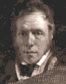
|
"The Ettrick Shepherd" was born in Ettrick Forest, the second of four sons of Robert Hogg and Margaret Laidlaw. At the age of 20 Hogg was employed as a shepherd at a farm in Yarrow belonging to a relative of his mother's who gave him access to books and encouraged him to write. His first pœm was published in "The Scots Magazine" in 1794, and in 1800 he published his first collection, "Scottish Pastorals".In 1801 he met Sir Walter Scott, and their mutual interest in traditional ballads led to a lifelong friendship. Hogg divided his activities between literature and farming, losing a great deal of money through a failed deal to buy a farm in Harris, and having little success with his own farm in Dumfriesshire. He moved to Edinburgh in 1810 and edited a literary magazine called "The Spy" which had to fold after a year. The publication of "The Queen's Wake" (1813) brought him the patronage of a Duke who granted him a farm in Yarrow at no rent. Hogg, now apparently free from financial worries, began writing stories and novels, among which "The Private Memoirs and Confessions of a Justified Sinner" (1824) is his most famous work (which greatly influenced Robert Louis Stevenson's "Dr Jekyll and Mr Hyde"). Hogg married in 1820 and had five children. He took a second farm, which he kept until he was bankrupted in 1830. He died five years later, on 21 November 1835, and is buried in Ettrick.
Though Hogg is now principally remembered for his "Justified Sinner",in his own time he was thought of as a Romantic pœt and a natural successor to Burns. He was admired as such by William Wordsworth (1770-1850), for whom Yarrow was a place of pilgrimage.
Nearly all Scots and English Jacobite songs have found their way into the 2 volumes of Hogg's collection encompassing no less than 337 songs inclusive of 76 Whig songs. The tune and more or less detailed comments are provided for 200 of them. However Hogg's name remains outstandingly linked with two kinds of Jacobite songs: |
"Le Berger d'Ettrick" est né à Ettrick Forest, second des quatre fils de Robert Hogg et Margaret Laidlaw. A l'âge de 20 ans Hogg fut employé comme berger à la ferme de Yarrow qui appartenait à un parent de sa mère, lequel l'initia à la littérature et l'encouragea à écrire. Son premier poème fut publié dans le "Scots Magazine" en 1794 et en 1800 parut son premier recueil, "Pastorales écossaises". En 1801 il fit la connaissance de Sir Walter Scott et leur intérêt commun pour les ballades traditionnelles se transforma en une amitié durable. Hogg partageait ses activités entre la littérature et l'agriculture qui lui fit perdre une fortune dans une tractation hasardeuse, l'achat d'une ferme à Harris, s'ajoutant aux piètres résultats de l'exploitation de sa propre ferme à Dumfriesshire. Il vint s'installer à Edimbourg en 1810 où il publia un magazine littéraire "The Spy" ("l'espion") qui disparut au bout d'un an. "The Queen's Wake" ('La veille de la reine', 1813) lui valut un mécène, un duc qui lui confia une ferme à Yarrow sans fermage. Hogg, à l'abri, croyait-il, des soucis financiers, se mit à écrire des nouvelles et des romans, parmi lesquels "The Private Memoirs and Confessions of a Justified Sinner" ('les mémoires privés d'un juste pêcheur', 1824) est son œuvre la plus fameuse (elle inspira à Robert Louis Stevenson son fameux "Dr Jekyll et Mr Hyde"). Hogg se maria en 1820 et eut cinq enfants. Il prit à bail une seconde ferme qu'il conserva jusqu'à sa faillite en 1830. Il mourut cinq ans plus tard, le 21 novembre 1835, et est enterré à Ettrick.
Bien que Hogg soit de nos jours principalement connu pour son "Justified Sinner", à son époque on voyait en lui un émule romantique de Burns. C'est en cette qualité qu'il était vénéré par des auteurs comme Wordsworth qui accouraient en pèlerinage à Yarrow.
Presque tous les chants Jacobites en langue vernaculaire ou en anglais se trouvent dans les 2 volumes du recueil de Hogg, lequel compte au total 337 chants, dont 76 chants Whigs. La musique et des notes plus ou moins détaillées sont fournies pour 200 d'entre eux. Cependant le nom de Hogg reste particulièrement attaché à deux sortes de chants Jacobites: |
Other collectorsThe ensuing chief collections of Jacobite songs were founded to a great extent on Hogg's "Jacobite Relics": |
Autres collecteursLes principaux recueils de chants Jacobites publiés par la suite sont tous basés essentiellement sur le travail de Hogg dans ses "Reliques": |
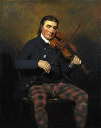
Neil Gow Jr., the composer of the "Flora's Lament" and "Came ye by Athol?" tunes, by Renry Raeburn
Sir Walter Scott (1771-1832)
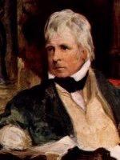
|
Considered the father of the regional and historical novel, Sir Walter Scott published in 1802 an impressive collection of old ballads with introductions and notes, entitled "Minstrelsy of the Scottish Border" in 2 volumes and an enlarged edition with 3 volumes in 1803. He was not a "crypto-Jacobite". However he took offence at any provocation against his nation's pride and astonished the Parliament of St Stephen's by his furious attacks on the proposal to amend the Scottish paper currency established for more than 150 years, when the country was independent. He wrote lyrics for some Jacobite songs: The Massacre of Glenoe Blue Bonnets over the Border Bonnie Dundee Flora McIvor's song A pastiche of "Carl an' the King come" Mckrimmon's Lament" |
Considéré comme le père du roman historico-régional, Walter Scott publia en 1802 une impressionnante collection d'anciennes ballades accompagnées d'une introduction et de notes, intitulée "Minstrelsy of the Scottish Border" (Poèmes et chants du Border Ecossais) en 2 volumes et une édition augmentée de 3 volumes en 1803. Ce n'était pas un "crypto-Jacobite", mais il n'admettait pas les provocations portant atteinte à sa fierté nationale. C'est ainsi qu'il étonna la Chambre des Communes par ses attaques virulentes contre un projet visant à réformer la monnaie papier écossaise datant de plus de 150 ans, une époque où l'Ecosse était indépendante. Il composa les textes de quelques chants Jacobites: Le Massacre de Glencoe Les Bonnets Bleus ont passé la Frontière Bonnie Dundee Le chant de Flora McIvor Un pastiche de "Ami, si le Roi vient" Mckrimmon's Lament" |
Robert Allan (1774 - 1841)
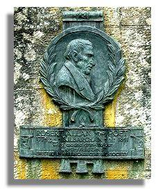
|
Robert Allan was born at Kilbarchan, Renfrewshire, November 4, 1774. Inheriting a taste for music, he early evinced talent in the composition of song, which was afterwards fostered by the encouragement of the poet Tannahill. Like Tannahill, his occupation was that of a weaver in his native place and many of his best songs were composed at the loom. A number of them he contributed to the Scottish Minstrel, published by R. A. Smith. Several of Allan's songs also appeared in the "Harp of Renfrewshire". In 1836 a volume of his poems was published under the editorial revision of Robert Burns Hardy of Glasgow, and attracted a great deal of attention among lovers of Scottish song, although financially the publication proved a sufficient failure to deter him from putting forth another volume. In his more advanced years he determined, in opposition to the wishes of his friends, to join his youngest son in the United States but only survived the passage six days and died in New York, June 1, 1841. Many of Allan's unpublished poems and songs were left in MS. in his son's possession. Several of Allan's lyrics will compare very favourably with the best specimens of the minor poets of his native land, among them the following Jacobite songs: The aged Chief's Lament A Lassie Cam' to our Gate When Charlie Came What the Steer, Kimmer? The Covenanter's Lament . The text above is based on "The Poets and Poetry of Scotland" published in 1876/77. |
Robert Allan est né à Kilbarchan, le 4 novembre 1774. Doué pour la musique, il négligea d'abord un talent de compositeur de chansons que le poête Tannahill l'encouragea par la suite à cultiver. Tout comme Tannahil il exerçait la profession de tisserand et il composa nombre de ses meilleurs chants devant son métier à tisser. Beaucoup d'entre eux prirent place dans le recueil "Le Ménestrel d'Ecosse" publié par R.A. Smith. Plusieurs autres furent publiés dans la "Harpe de Renfrewshire". En 1836, un volume de ses poèmes, publié sous la direction éditoriale de Robert Burns Hardy à Glasgow, suscita l'enthousiasme des amateurs de chants écossais, mais sa publication se solda par des pertes suffisantes pour décourager l'auteur de faire paraître un second volume. Déjà très avancé en âge, il décida, malgré les protestations de ses amis, d'aller rejoindre son plus jeune fils aux Etats-Unis, mais il ne survécut que six jours au voyage et mourut à New York le 1er juin 1841. De nombreux poèmes d'Allan restent non publiés, sous forme de manuscrits légués à son fils. Plusieurs des textes de chants d'Allan supportent la comparaison avec les meilleurs poètes mineurs de son pays, parmi lesquels les chants Jacobites suivants/ La complainte du vieux chef Une jeune fille vint frapper à notre huis Quand Charlie est venu Quel est ce bruit, commère? Lamentation d'un Covenantaire. Ce qui précède s'inspire de "The Poets and Poetry of Scotland" publié en 1876/77. |
Peter Buchan (1790 - 1854)
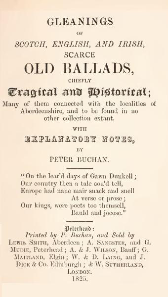
|
Peter Buchan was a Scottish editor, born at Peterhead, Aberdeenshire, in 1790. In 1816 he started in business as a printer at Peterhead, and was successful enough to be able eventually to retire and devote himself to the collection and editing of Scottish ballads. - His "Gleanings of Scotch, English, and Irish, scarce old ballads" (1825) and - "Ancient Ballads and Songs of the North of Scotland" (1828) contained a large number of hitherto unpublished ballads, and newly discovered versions of existing ones. - In 1839 he edited Alexander McDonald's "Interesting and faithful narrative of the wanderings of Prince Charles and Miss Flora McDonald after the Battle of Culloden" with an Appendix of Jacobite Songs including several hitherto unknown pieces. - Another collection made by him was published by the Percy Society, under the title "Scottish Traditionary Versions of Ancient Ballads" (1845, with no mention of his name). - Two unpublished volumes of Buchan's ballad collections ("Ancient Minstrelsy of the North of Scotland in its original purity") are in the British Museum. A transcript made in 1873 was used by the American folklorist and Harvard professor Francis James Child for his "English and Scottish popular ballads" (1882 - 1898). The "Secret songs of silence" are a MS collection of notorious bawdy Scottish songs compiled by Sir Oliver Orpheus, a pseudonym for Peter Buchan. They are kept in the library of Harvard University, as well as the MS from which "Ancient Ballads and Songs". Buchan died on the 19th of September 1854. The following Jacobite songs were taken from his collections: The Duke of Argyle's Courtship, Jamie the Rover (second version), Kilmarnock's Lament, The Youth that should have been our King and, from the afore-mentioned Appendice to "Wanderings of Prince Charles and Flora": By Carnousie's auld Wa's General Cope's Travel McLeod's Defeat at Inverury That Mushroom Thing Cumberland Source: Encyclopaedia Britannica 1911 and the website "Tour of Scotland" |
Peter Buchan est un éditeur écossais, né à Peterhead, Aberdeenshire, en 1790. En 1816 il ouvrit une imprimerie à Peterhead et fut suffisamment heureux en affaires pour prendre sa retraite et se consacrer à la collecte et la publication de ballades écossaises. - Ses "Moissons de ballades rares et anciennes d'Ecosse, Angleterre et Irlande" et - ses "Anciennes Ballades et Chansons du nord de l'Ecosse" (1828) comprenaient un grand nombre de morceaux jamais imprimés jusqu'ici, et des versions inconnues de chants existants. - C'est lui qui publia en 1839 " La curieuse et fidèle narration des tribulations du Prince Charles et de Melle Flora McDonald après la bataille de Culloden" d'Alexander McDonald, à laquelle fait suite une Annexe de chants Jacobites dont plusieurs sont inédits. - Un autre recueil, composé par ses soins, fut publié par la Percy Society, sous le titre "Versions écossaises traditionnelles de Ballades anciennes" (1845). - Deux volumes non publiés des collections de ballades de Buchan ("Anciens chants du nord de l'Ecosse dans leur pureté d'origine") sont conservés au British Museum. Une transcription réalisée en 1873 fut utilisée par le folkloriste et professeur à Harvard Francis James Child dans ses "Ballades populaires anglaises et écossaises" (1882 - 1898). Les "Chants secrets du silence" sont un recueil manuscrit de chansons paillardes écossaises compilées par Sir Oliver Orpheus (pseudonyme de Buchan). Ils sont conservés, ainsi que le manuscrit d'où sont tirés les "Anciennes Ballades et Chansons", à l'université Harvard. Il mourut le 19 septembre 1854. Les chants Jacobites suivants sont tirés de ses collections: La courtise du Duc d'Argyll, Jacques dans l'errance (2ème version), Lamentations de Kilmarnock, Né pour être un jour notre roi et, des Chants Jacobites de l'annexe aux "Tribulations de Charles et Flora": Les murailles de Carnousie Les pérégrinations du général Cope McLeod le vaincu d'Inverury Cet être informe appelé Cumberland Source: Encyclopaedia Britannica 1911 et le site Web "Tour of Scotland" |
Allan Cunningham (1791-1839)
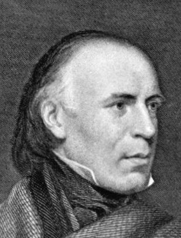
|
Allan Cunningham, born in Dumfriesshire became at first a mason in spite of his middle-class descent, but later, was secretary to the sculptor Chantrey. At the same time he contributed to magazines and publications and supplied the publisher Robert Hartley Cromek with most of the material contained in his Remains of Nithsdale and Galloway Song (1810), whose contents were mainly created by him. However, in some cases, he merely modified traditional old songs. He published a drama (Sir Mamaduke) in 1820 that never was performed and a rustic epic, the Maid of Elvar, in 1833. Sir Walter Scott was always quick to expose the fraud but deeply appreciated Cunningham's verse.
His Songs of Scotland Ancient and Modern in four volumes - 1825, include some of his own compositions, in particuliar Jacobite Songs which found their way into Hogg's Jacobite Relics of Scotland. |
Allan Cunningham, né dans le Dumfriesshire commença par être maçon, malgré ses origines bourgeoises mais devint par la suite le secrétaire particulier du sculpteur Chantrey. En même temps, il collabora à des magazines et des publications et il fournit à l'éditeur Robert Hartley Cromek l'essentiel du contenu de ses Remains of Nithsdale and Galloway Song (Vestiges de l'art du chant de Nithsdale et Galloway) (1810), dont il avait écrit lui-même la plus grande partie. Il est arrivé toutefois qu'il se soit contenté de modifier de vieux chants de la tradition. Il publia un drame (Sir Mamaduke) en 1820 qui ne fut jamais joué et une épopée rustique, la Jeune fille d' Elvar, en 1833. Sir Walter Scott ne manquait jamais de dénoncer ses supercheries, tout en étant un défenseur enthousiaste de sa poésie.
Ses Chants d'Ecosse, Anciens et Modernes en quatre volumes - 1825, incluent certaines de ses propres compositions, en particulier, des chants Jacobites que l'on retrouve dans les Reliques Jacobites d'Ecosse de Hogg. |